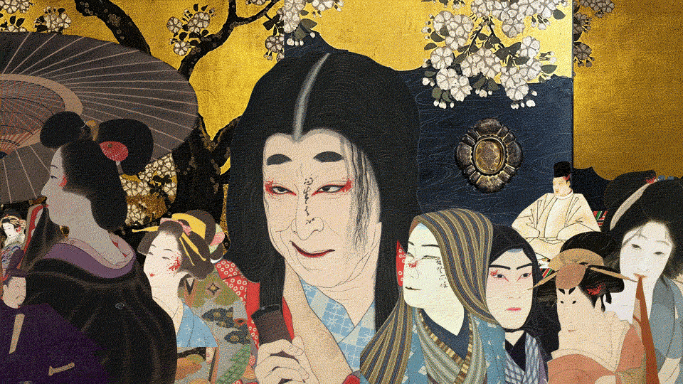
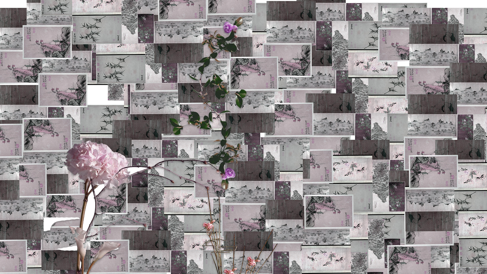
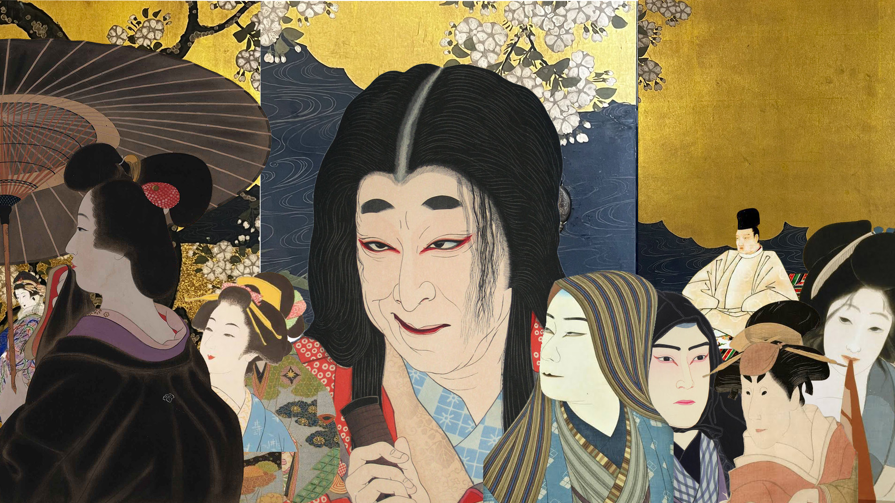
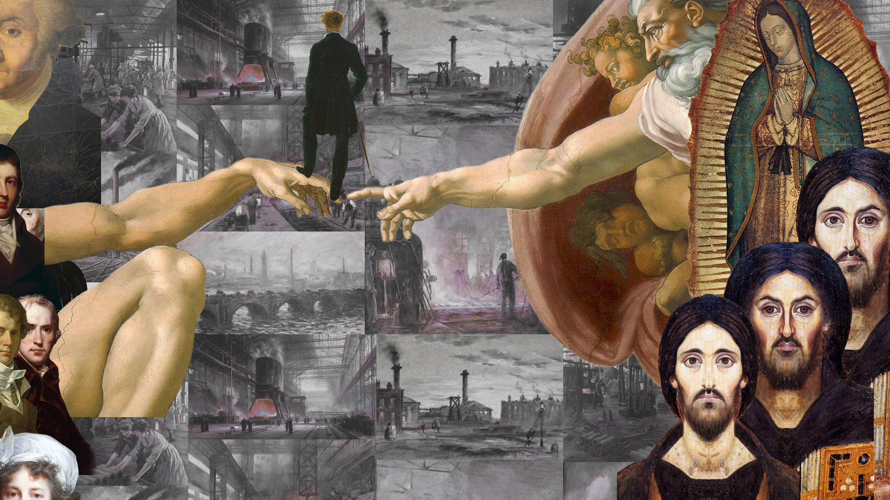
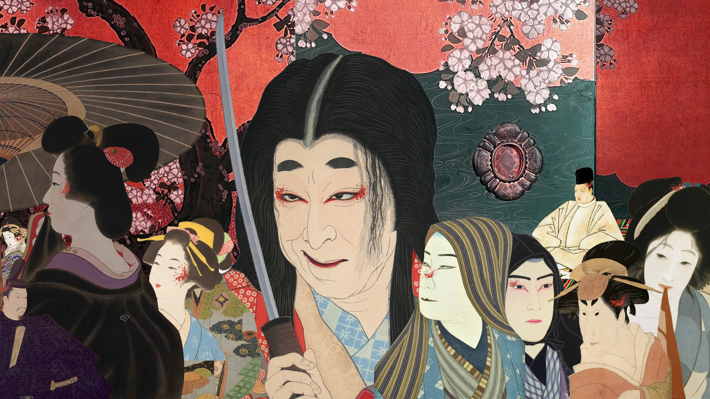

01 / ANIMATED COLLAGE
Palace intrigue.
A crowded court, a rising sword, and an absence left behind.

Final animation · nine seconds. Open the GIF to view it.
THE IDEA BEHIND JP
What happens
behind the doors?
This idea grew out of my mother’s love of historical dramas, especially stories about palace intrigue. I was interested in the relationships inside a court: who holds power, who depends on someone else, and how an apparently beautiful setting can contain suspicion and danger. I brought together figures to represent different court roles—a shogun, an emperor, a chief retainer, a concubine, and others—because each has a place in that network of intrigue.
The palace’s sliding doors became a symbol of entry into that world. A door separates what can be seen from what happens behind it. I wanted the background to suggest that entering the palace also means entering its hidden relationships. Around the faces, I used red spider lilies as symbols of death, drawing on the Japanese symbolism that informed this idea. Their placement near the nose, ears, mouth, and eyes connects the senses to the intrigue: what people see, smell, hear, and say within the house.
The sword contrasts with the surrounding ornament and the indirect ways intrigue unfolds. Whatever is whispered or concealed, its consequences can become physical. The visible blade is a reminder that death may be the outcome of these relationships. In the final animation, the sword slowly rises from its sheath in preparation for an assassination. The screen goes dark, and when the scene returns, the shogun is gone. The missing figure tells us what happened during the darkness.
THREE STARTING POINTS
Different ideas.
A shared process.
I began with three collage ideas, labelled flowers, jp, and Try1. Each grew from a different personal connection. JP became the direction I developed into the final GIF.


A connection through flowers
This idea came from my mother’s love of ikebana. I wanted to touch on something meaningful to her through the arrangement of flowers and the space around them. The collage combines repeated landscape and botanical images with larger flowers and stems, bringing that personal connection into the foreground.


A court full of relationships
My mother’s interest in historical dramas led me toward palace intrigue. In this starting composition, I brought different court roles together within a setting of gold screens and sliding doors. The figures’ proximity creates the sense of a shared court, while their different positions suggest the relationships I wanted to explore.


Industry and a distance from God
Try1 began with my concern that industrialization has severed our connection with God. I was thinking about Enlightenment ideas of reason and progress, and what might be lost when industrial achievement becomes a measure of human life. By placing factories beside portraits and religious imagery, I wanted to make that spiritual distance visible.

FROM STILL IMAGE TO ANIMATION
Making the
absence matter.
I developed JP through different arrangements and colour treatments. The experimentation image records one of those variations: the red background, the floral details, and the sword make the danger more explicit. The final GIF returns to the gold palace setting and adds a sequence of events to the composition.
I used Photoshop layers and a custom JSX script to animate the sword while keeping the flowers, background, and remaining figures fixed. The blackout moves through the top, middle, and bottom of the picture, then holds before the character disappears. When the artwork fades back in, the empty place changes how we read the scene.
The timing became part of the idea. The slowly rising blade builds anticipation, the darkness conceals the act, and the pause makes the final absence something the viewer has time to notice. The GIF is the finished work; the three initial collages and the experimentation still show how I arrived there.